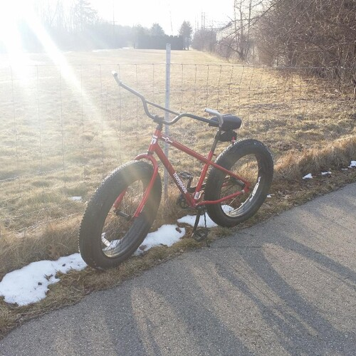

#382: Bicycle Adventures: I-275 Metro Trail And Metroparks
Wednesday, March 17th 2021, 9:20:03 pm
Available as mp3 audio and narrated by the author.
I noticed the little road by I-275 a long time ago,
back then it was still in disrepair, today it is all new.
The I-275 Trail
connects to other trails.
Hines Drive is pretty neat and very safe,
as you can ride on the sidewalk away from all the cars.
Lower Huron Metropark is pretty much an adventure in it self,
As neat as that is, there is another park, and it is big and very interesting,
It takes a while to explore it,
you will need water and some trail mix, this is a proper expedition now.
And it connects to yet another park, all free,
it is called The Oakwoods Metropark, and that one has a little nature preserve cabin you can munch your trail mix in.
There is a secret little passage here,
that takes you to Downtown Flatrock.
From Flatrock it is not super far to a little lookout by Lake Erie,
this park is called The Lake Erie Metropark.
I had some trouble navigating through Flatrock to The Lake Erie Metropark,
the trail was not marked, and I was just headed towards Lake Erie, I didn't know there was a fancy little metropark there.
If you set of early morning,
you can make it in one day.
But it gets weird, when you are already tired,
and you realize you are only half way through your journey.
It would be nice to spend some time on that little lookout,
there are lots of fancy geese there in the summer.
As an exploratory expedition,
it is a perfect adventure.
But maybe staying at the tent site,
and maybe a hotel in flat-rock could be pretty fun.
It would become a three or four day adventure,
and there is nothing here that is too wiled or deprived, it is just fancy bicycle trails.
Another option is to have your family or freinds have a get together at the The Lake Erie Metropark,
and then drive you back, so that you can enjoy the BBQ.
Overall, I think every park deserves an adventure into,
they usually have more to offer than aparking area.
For example the Lower Huron Metropark has a Turtle Cove Family Aquatic Center attraction,
people go there to swim in the summer.
Personally, I really enjoyed a small pick-nick I setup for myself one summer,
at a lonely bench by the tiny Washago Pond.
As to the bicycle it self...
Riding a bicycle takes a little while to get used to,
and I recommend a soft seat, with extra padding.
And actually buying a bicycle and maintaining it is not hard,
because you want a simple bicycle.
Don't buy one with crazy shifters and break handles,
and break discs, wires and lines.
It will all squeak, it will need annoying adjustments,
it will rust, or bend and sometimes fall out.
The less a bike has the less will get broken,
with the exception of the tires, get a simple $300 fat tire bike.
Sometimes you get a lemon, so be ready to take it back to the store for a quick replacement,
I own a Mongoose 26 Inch Brutus Alloy All Terrain Mountain Bike.
It cost me $150 at a local supermarket,
as it was $100 off.
I replaced my Handlebar with one meant for an ATV,
as it is few inches wider, but the older one was not too bad.
I only needed to remove once screw to replace the handlebar,
since there are no break handles or gear shifters to mess with.
The way you stop the bike, is by moving the pedals backwards a little bit,
there is breaking mechanism that is triggered by that reverse motion.
It does get loud on the trail because it runs by a highway,
so just in case it gets too annoying bring some foam earplugs make sure they are rated NRR 33.
And remember sun tan lotion,
and bug repellent.
All the adventures out there are stunning,
no matter where you go.
Add some music or audio books,
and short weekends will slowly transform into long and adventure filled vacations.

Available as mp3 audio and narrated by the author.
References
- 1. I-275 Trail (michigantrails.org)
- 2. Lower Huron Metropark (goo.gl)
- 3. campsite for tents, equipped with a safe place for a fire, private benches, a little parking spot, with a near by vending machine and restrooms (goo.gl)
- 4. The Willow Metropark (goo.gl)
- 5. it connects to yet another park (goo.gl)
- 6. The Oakwoods Metropark (goo.gl)
- 7. has a little nature preserve cabin you can munch your trail mix in (goo.gl)
- 8. secret little passage here (goo.gl)
- 9. Downtown Flatrock (goo.gl)
- 10. a little lookout by Lake Erie (goo.gl)
- 11. The Lake Erie Metropark (goo.gl)
- 12. Turtle Cove Family Aquatic Center (goo.gl)
- 13. Washago Pond (goo.gl)